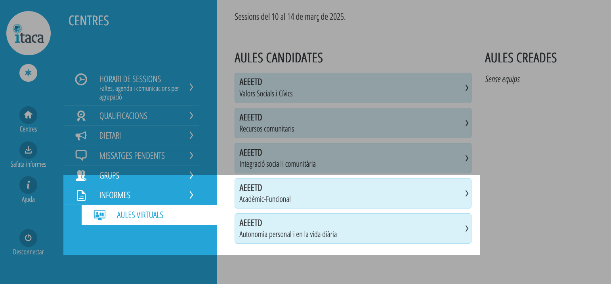
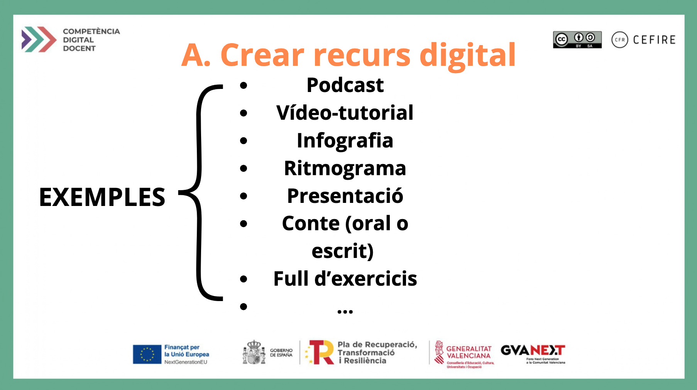

Activitat
- Nom
- Enllaç
- Captura
- Descripció
- Format
- Autoria
- Tipus de llicència
- Característiques d'ús
1. Planifica una activitat que tinga com a objectiu que el teu alumnat aprenga a:
2. Per dur a terme aquesta activitat dins de l’aula crea un recurs educatiu (infografia, presentació, recurs eXeLearning, una tasca al quadern de OneNote...) mitjançant una eina d’autor, continga com a mínim:
3. Puja el teu recurs al repositori Procumún amb un nom identificatiu clar i una organització coherent.
Si el recurs no es poguera pujar a Procomún per estar a Microsoft corporatiu (Teams o OneNote), és propi d’Aules (una wiki, un llibre o un H5P) o qualsevol casuística similar, valdrà amb adjuntar la captura de pantalla del recurs creat dins d’aquests entornns.

4. Posa en pràctica l’activitat a l’aula amb el teu alumnat. Si no disposes d’alumnat amb docència directa, pots actuar en codocència

5. Avalua la posada en pràctica segons allò indicat en la plantilla
6. No oblides emplenar tots els apartats de la plantilla de la tasca A
Amb la finalitat d’adaptar la tasca a la casuística de cada docent també es pot indicar la seua realització partint d’un recurs que ja hem creat prèviament. En aquest cas començaríem per l’apartat de la plantilla que fa al·lusió a la descripció tècnica del recurs.

Llicenciat sota la Llicència Creative Commons Reconeixement CompartirIgual 4.0